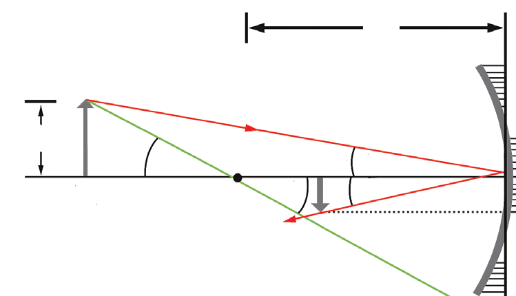
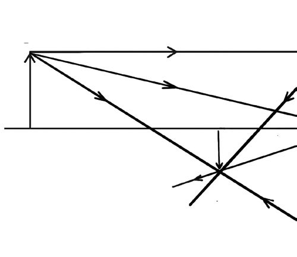

to diverge from the principal focus F, while the ray ON is reflected along its original path, hence appearing to come from C. 5. The image of the object is formed at the point of intersection of lines AF and NC. 6. Measure the image distance, and height of the image, . 7. Since the scale is 1 cm to 5 cm, it then follows that:
image distance,
height of image,
8. Virtual rays form the point of intersection, so the image is virtual. 9. The image is upright and diminished.
Curved mirror formula
Ray diagrams provide valuable information for determining the approximate location and size of the image. However, they do not deliver accurate numerical information concerning image distance and size. This is due to several errors that can arise from various sources when creating ray diagrams. Therefore, to obtain more precise numerical information, one should use the mirror equation and the magnification equation. The mirror equation provides the quantitative relationship between the object distance , the image distance , and the focal length . This equation is derived using the geometry of either concave or convex mirrors.


From Figure 4.29 (a), the angles and $'$ are alternate interior angles thus they have the same magnitude. However, they differ in sign if we measure angles from the optical axis. Therefore, $\phi = \phi'$. On the other hand, an analogous scenario holds for the angles and $'$, which have equal magnitudes following the laws of reflection by concave mirrors. However, if measured from the optical axis, $ = -'$. Now, considering the